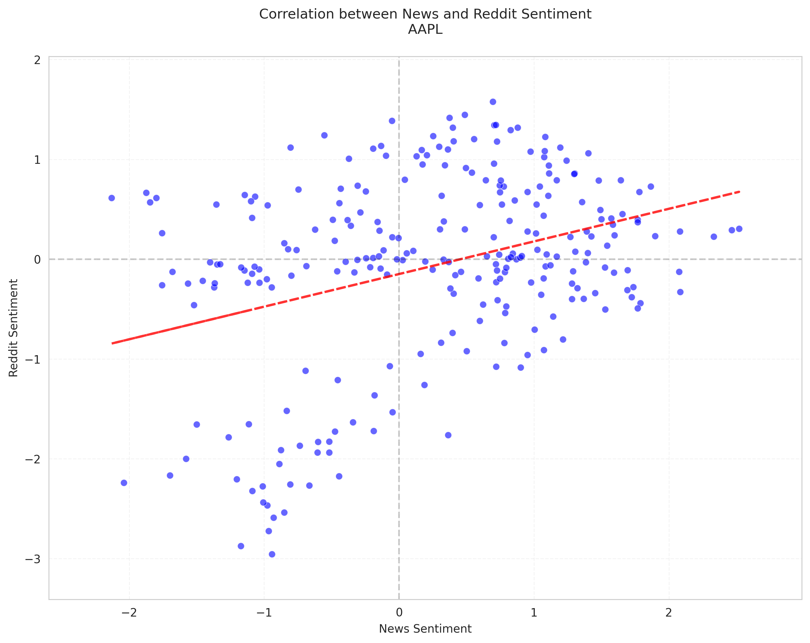
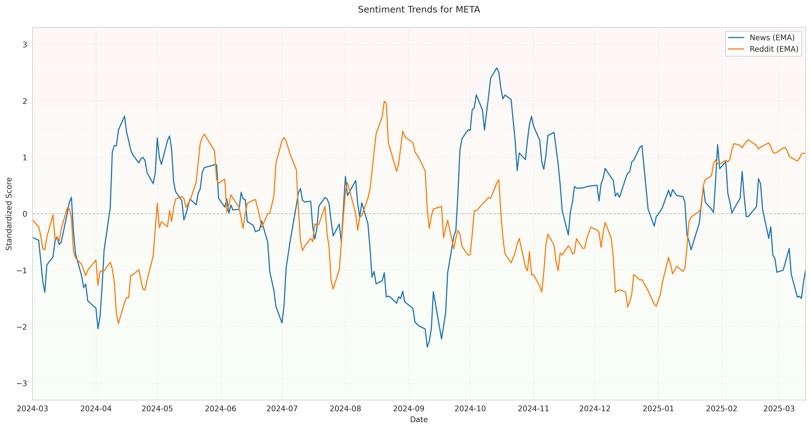

Hypothesis 1: Sentiment Correlation Analysis
Research Question
Do sentiment trends between legacy news media and Reddit show significant correlation? Does Reddit sentiment lead news media sentiment?
Hypotheses
Null Hypothesis (H0): Sentiment trends between legacy news media and Reddit does not have any significant correlation.
Alternative Hypothesis (H1): Sentiment trends between legacy news media and Reddit have a significant correlation. Also, Reddit sentiment has a faster respond and leads the legacy news media sentiment.
Statistical Methods
- Pearson Correlation Analysis: To measure the linear relationship between news and Reddit sentiment
- Cross-Correlation Analysis: To identify lead-lag relationships between the two sentiment series
- Granger Causality Tests: To determine if one sentiment series helps predict the other
Summary Results
Key Findings:
- Total stocks analyzed: 6
- Stocks with significant correlation: 6
- Stocks where Reddit sentiment leads News sentiment: 2 (TSLA, NVDA)
Detailed Results by Stock
| Stock |
Sample Size |
Pearson Correlation |
P-value |
Reddit Leads News? |
Conclusion |
| TSLA |
250 |
0.7711 |
0.0000 |
Yes |
Reject H0 |
| NVDA |
249 |
0.5520 |
0.0000 |
Yes |
Reject H0 |
| SPY |
257 |
0.4132 |
0.0000 |
No |
Reject H0 |
| AAPL |
255 |
0.3475 |
0.0000 |
No |
Reject H0 |
| META |
252 |
-0.3217 |
0.0000 |
No |
Reject H0 |
| PLTR |
248 |
0.2287 |
0.0003 |
No |
Reject H0 |
Individual Stock Analysis
TSLA
Granger Causality Results:
| Direction |
Lag 1 |
Lag 2 |
Lag 3 |
Lag 4 |
Lag 5 |
| news_to_reddit |
0.0639 |
0.2278 |
0.3400 |
0.3388 |
0.3013 |
| reddit_to_news |
0.0037 |
0.0050 |
0.0124 |
0.0238 |
0.0423 |
NVDA
Granger Causality Results:
| Direction |
Lag 1 |
Lag 2 |
Lag 3 |
Lag 4 |
Lag 5 |
| news_to_reddit |
0.4220 |
0.6033 |
0.8194 |
0.4133 |
0.6041 |
| reddit_to_news |
0.0623 |
0.0049 |
0.0143 |
0.0349 |
0.0424 |
SPY
Granger Causality Results:
| Direction |
Lag 1 |
Lag 2 |
Lag 3 |
Lag 4 |
Lag 5 |
| news_to_reddit |
0.1485 |
0.2614 |
0.3126 |
0.3064 |
0.3688 |
| reddit_to_news |
0.8213 |
0.3632 |
0.3684 |
0.5656 |
0.6098 |
AAPL

Granger Causality Results:
| Direction |
Lag 1 |
Lag 2 |
Lag 3 |
Lag 4 |
Lag 5 |
| news_to_reddit |
0.5171 |
0.7633 |
0.8288 |
0.9519 |
0.9637 |
| reddit_to_news |
0.8361 |
0.1914 |
0.3110 |
0.1899 |
0.2513 |
META

Granger Causality Results:
| Direction |
Lag 1 |
Lag 2 |
Lag 3 |
Lag 4 |
Lag 5 |
| news_to_reddit |
0.0861 |
0.1879 |
0.0248 |
0.0031 |
0.0104 |
| reddit_to_news |
0.2722 |
0.0595 |
0.0981 |
0.1877 |
0.1047 |
PLTR
Granger Causality Results:
| Direction |
Lag 1 |
Lag 2 |
Lag 3 |
Lag 4 |
Lag 5 |
| news_to_reddit |
0.1067 |
0.2818 |
0.3851 |
0.6760 |
0.6830 |
| reddit_to_news |
0.4987 |
0.5712 |
0.8108 |
0.8800 |
0.8783 |
Conclusion
The analysis provides evidence to reject the null hypothesis for 6 out of 6 stocks. There is a significant correlation between sentiment trends in legacy news media and Reddit for the majority of the stocks analyzed.
Furthermore, for 2 stocks (TSLA, NVDA), the Granger causality tests indicate that Reddit sentiment leads news media sentiment, supporting the second part of the alternative hypothesis.
These findings suggest that while there is often alignment between institutional and retail investor sentiment as reflected in news media and social media, the leading relationship between these platforms varies by stock and is not consistent across the market.